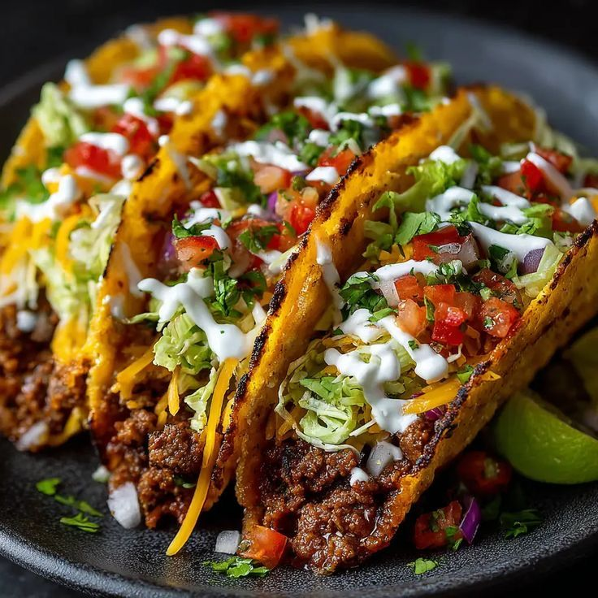

Home
Taco Recipe

Tacos are a beloved Mexican dish made with soft or hard corn or wheat tortillas filled with seasoned meat, vegetables, and condiments. They're versatile, easy to customize, and perfect for casual meals or parties.
Ingredients
- 500g ground beef or chicken
- 1 small onion (chopped)
- 1 clove garlic (minced)
- 1 packet taco seasoning
- 8 small tortillas (corn or flour)
- 1 cup shredded lettuce
- 1 cup diced tomatoes
- 1 cup shredded cheese (cheddar or Mexican blend)
- 1/2 cup sour cream (optional)
- 1/2 cup salsa (optional)
Steps
- In a skillet, cook ground beef or chicken over medium heat until browned. Add chopped onion and minced garlic, and cook until softened.
- Stir in taco seasoning and a splash of water, and simmer for 5 minutes until the meat is well coated and the sauce has thickened.
- Warm tortillas in a dry skillet or microwave until pliable.
- Assemble tacos by spooning the meat mixture onto each tortilla, then topping with shredded lettuce, diced tomatoes, shredded cheese, and any additional condiments like sour cream or salsa.
- Serve immediately and enjoy!